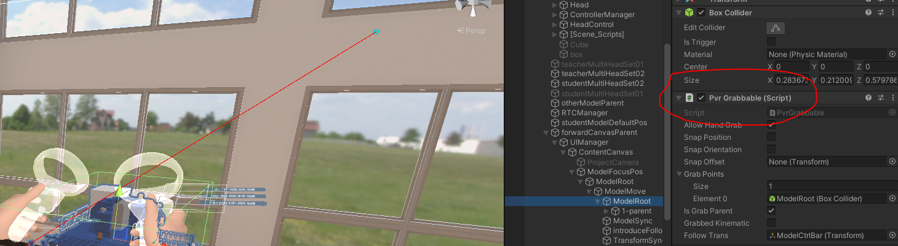
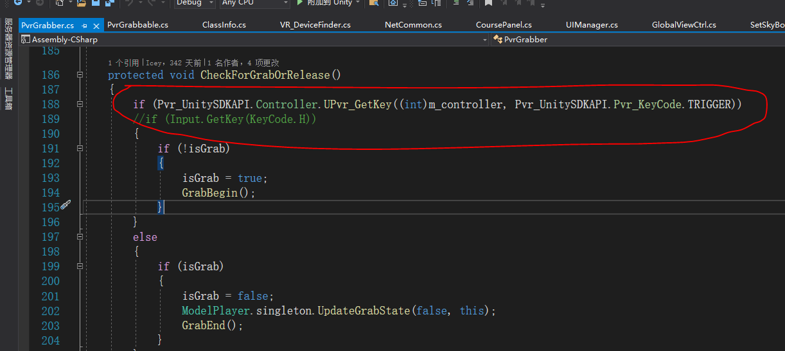
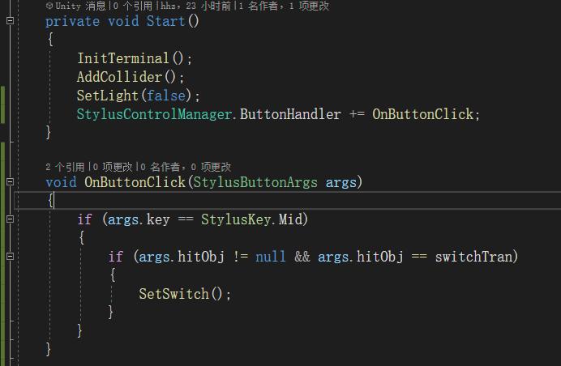

从其他工程转成Kmax工程
工程转换
1.把项目从Android平台切换到PC平台
依次选择“File/Build Settings”，在Building Settings弹窗的Platform选择PC平台，点击“Switch Platform”切换成PC平台。
2.移除其他的SDK(可选)
打开工程目录，删除“Assests/PicoMobileSDK”文件夹，同时删除属于Pico插件Plugins下的文件夹。
3.导入Kmax的SDK
Kmax的SDK导入请点这里。
生成Kmax需要的框架
在Hierarchy创建一个空物体，命名为Kmax，位置归零。在Hierarchy面板空白右键“Kmax/Add KmaxVR”，把生成在场景的KmaxVR物体放在Kmax下面，使其成为Kmax的子物体。在Kmax下面创建一个渲染UI的Canvas，Canvas的Render Mode选择World Space，Event Camera选择KmaxVR/MainCamera的相机。并在Canvas物体上添加UIFacade脚本。把Canvas的事件系统EventSystem物体上的StandaloneInputModule移除掉，并在EventSystem物体上添加StylusInputModule组件，在Hierarchy面板空白右键“Kmax/Fix Canvas”。
工程修改
1.操作模型部分
在你的工程里，一般来说，可以操作的模型，都挂上组件用来标识模型的可操作性，如下图示例工程用的PvrGrabbable脚本组件。

找到操作物体的管理脚本，找到输入代码，如下图示例工程用的PvrGrabber管理脚本。

将PvrGrabber在Update里的监听Pico的接口，改成你Kmax里你需要的按键的事件监听StylusControlManager.ButtonHandler。例如你需要监听的是触笔的中键，监听示例如下图：

注意：如果你的Pico操作模型(如手模型)添加了Rigidbody组件，在删除Pico的资源之后，也需要在你触笔笔尖添加上跟Pico模型一样值的Rigidbody组件，保持统一性。
如果没有管理模型操作的脚本，你可能需要在你操作模型的脚本代码里监听Pico按键接口的地方，修改成Kmax里的触笔按键监听事件，具体按键事件请参阅从空工程开始文档。
2.UI部分
把所有UI面板放置到框架生成的Canvas下面，并做好自适应即可。
如果你的项目有多个Canvas，请确保每个Canvas上都挂有UIFacade脚本。
3.其他
如你在项目中还有一些调用Pico的按键接口的地方，你需要确定修改Pico按键对应于Kmax项目中的按键，进行修改，具体按键事件监听请点这里
其他问题
Tip
如果你在转工程中还遇到其他问题，请参阅从空工程开始文档